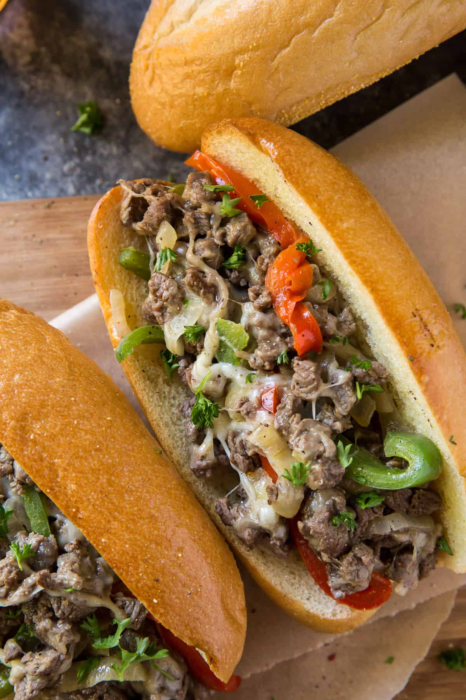

Philly Cheesesteak Sandwiches

Nothing beats a homemade philly cheesesteak sandwich after a long day of work!
I love to pair this meal with some sweet potatoe fries!
Ingredients:
- 4 tablespoons vegetable oil
- 1 sweet yellow onion, halved and thinly sliced (2-inch slices)
- 1 red bell pepper, thinly sliced
- 1 green bell pepper, thinly sliced
- 2½ to 3 pounds petite sirloin, thinly sliced sirloin
- 1 ½ teaspoons Lawry’s Seasoned Salt
- 1 teaspoon garlic pepper, divided
- 8 hoagie rolls
- 6 tablespoons softened butter
- 7 ounces sliced Provolone cheese
Instructions:
- Before starting, place beef in the freezer for about 20 to 30 minutes. This will make it easy to slice thinly.
- Add 2 tablespoons vegetable oil to a large, deep (14-inch) sauté pan and place over MEDIUM-LOW heat. Add onion and bell peppers. Allow to cook, stirring occasionally, until very tender. If they are beginning to brown, turn the heat under the skillet down a bit. While the veggies are cooking, prepare the steak, returning to stir every now and then.
- Remove steak from freezer and place it on a cutting board. Use a sharp knife to trim edges of excess fat and then slice it as thinly as possible across the grain. Chop the sliced steak into very small pieces. Keep chopping until you can chop no more! You want little ¼-inch-ish pieces. Check on those veggies periodically while you're prepping the beef.
- When the veggies are tender, transfer them to a dish and return the skillet to the heat. Add additional oil and place over MEDIUM-HIGH heat. Add half of the chopped steak and cook, stirring frequently, for about 4 to 5 minutes, or until no pink remains. Season with ¾ teaspoon seasoned salt and ½ teaspoon garlic pepper while cooking. Transfer the first batch of steak with a slotted spoon to the dish with the onions and peppers, leaving the juice behind in the pan. Add additional oil, if needed and repeat with remaining steak and seasoning.
- Preheat oven to 400 degrees F.
- Split open the hoagies rolls but do not separate them. Spread them with the softened butter and place them on a baking sheet. Transfer the baking sheet to the oven and bake for 3 to 5 minutes or until lightly golden and toasted.
- Drain off all of the juices from the pan and return to the stove. Add back all of the steak and the onions and peppers. Place 7 provolone slices over the mixture in a circle and cover the pan. Cook on MEDIUM until cheese melts, about 4 to 5 minutes, then stir and use tongs to transfer to the toasted sandwich rolls.
- Enjoy :)